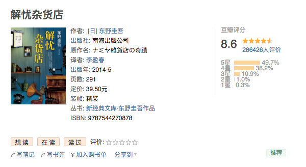
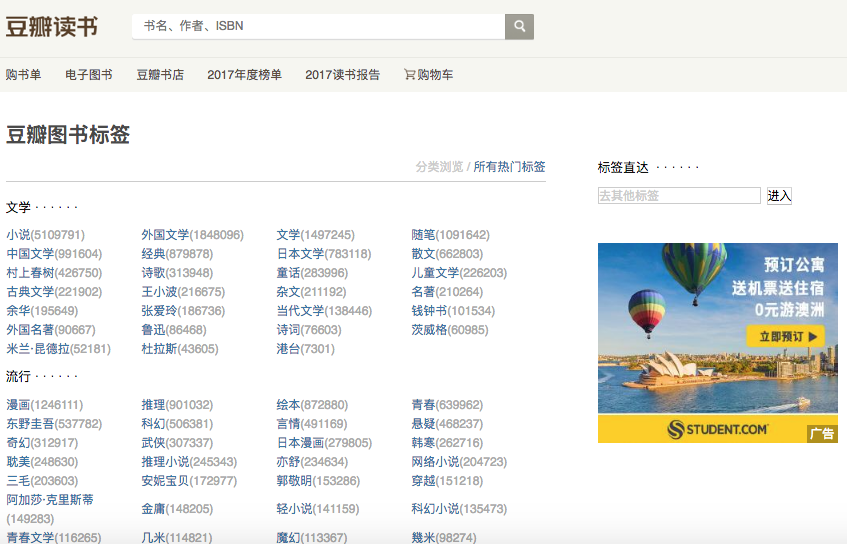

23. 爬虫项目需求分析
1 项目名称
- 《豆瓣读书信息爬取项目》
2 项目描述：
- 使用Python编程语言编写一个网络爬虫项目，将豆瓣读书网站上的所有图书信息爬取下来，并存储到MySQL数据库中。
爬取信息字段要求：
[ID号、书名、作者、出版社、原作名、译者、出版年、页数、定价、装帧、丛书、ISBN、评分、评论人数]
3 爬取网站过程分析：
- 打开豆瓣读书的首页：https://book.douban.com/
- 在豆瓣读书首页的右侧点击
所有热门标签，打开豆瓣图书标签页面： - 网址：https://book.douban.com/tag/?view=type&icn=index-sorttags-all

- 点击
豆瓣图书标签页面中所有的标签，进行对应标签下图书信息的列表页展示。
- 在豆瓣图书列表页中可以获取每本圖片詳情信息。
4 运行环境要求：
- 运行环境描述：
- 操作系统：Windows/Linux/Mac
- python语言3.5以上版本
- MySQL数据库
- Redis数据库
- Scrapy框架
- Scrapy-Redis
- 还有其他各种驱动组件，使用pip命令安装
5 项目中的建议：
本次项目信息爬取量大，建议使用分布式信息爬取。
访问时的错误：
检测到有异常请求从你的 IP 发出，请`登录`使用豆瓣。
最近需要爬取豆瓣的用户评分数据构造一个数据集，但是在爬取时却出了问题:
豆瓣封IP，白天一分钟可以访问40次，晚上一分钟可以访问60次，超过限制次数就会封IP。
于是，我便去代理IP网站上找了几个代理IP，但是爬取时又碰到了问题，明明已经使用代理IP，但是一旦超过限制次数爬虫仍然不能正常访问豆瓣。
问题出在Cookie上
豆瓣利用封IP+封Cookie来限制爬虫，因此只用代理IP的话也不行，Cookie也要更换。
想法一：
每次使用代理IP时，先访问豆瓣官网获取Cookie再访问用户的评论页面。本以为换了IP，Cookie随之也会更换，其实Cookie并没有改变。
想法二：
伪造Cookie。
观察豆瓣设置的Cookie格式，并进行伪造。